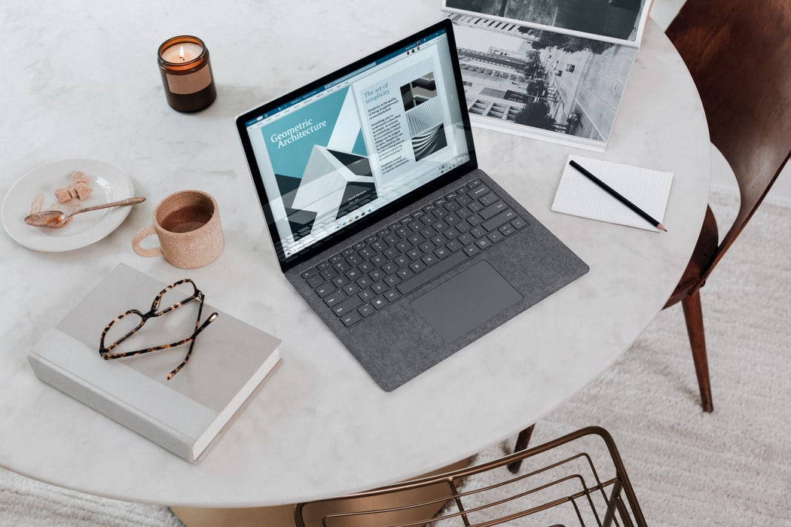

Op de groei
Momenteel ben ik bezig met de opleiding Software Developer. Als eerste project zijn we bezig met het maken van een portfolio website, dat is dus de website waar u nu op bent. Op deze pagina komt u te weten wat ik tot nu toe al heb gedaan.
De portfolio website is dus het eerste project waar we mee begonnen zijn, maar ik heb hier voor ook al andere projecten gemaakt. Zoals u kunt zien op de pagina designs heb ik al meerdere dingen gemaakt, dit is gemaakt doormiddel van HTML en CSS en het waren allemaal schoolprojecten. Ik ben dus echt nog veel aan het leren en aan het oefenen. Naar mate ik meer kan en heb gemaakt zal dit te zien zijn op mijn website.

Photo copyright free from unsplash.com